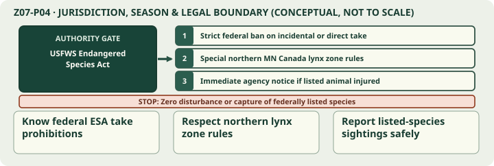

Z07-P04 · Traps and snares · New manuscript
Endangered Species Act and Canada Lynx Zone Protections
Explain strict federal Endangered Species Act prohibitions and special northern Minnesota lynx-management protections.
When it applies · Northeastern Minnesota boreal forests and federally listed species habitats.
Equipment · USFWS ESA notices and MN DNR Lynx Management Zone maps.

Actions
- Understand that the federal Endangered Species Act strictly prohibits intentional or incidental take—including trapping, injuring, or harassing—of federally listed threatened or endangered species.[L03]
- Recognize that northern Minnesota overlaps Canada lynx habitat and federal gray-wolf protection areas where strict gear, bait, and exclusion rules apply.[L03, H13]
- Report any accidental sighting or suspected capture of a federally listed animal immediately to Minnesota DNR and the U.S. Fish & Wildlife Service without approaching the animal.[L03, L06]
Failure recognition · Ignoring federal ESA protections risks severe federal criminal and civil penalties and irreversible harm to imperiled northern wildlife.[L03]
Verify · Federal ESA protections and listed-species reporting channels are recognized across all northern Minnesota fieldwork.[L03, L06]
Stop or change course · Stop and leave protected lynx or wolf habitat undisturbed; call authorities immediately if an injured or trapped listed animal is discovered.[L03, L06]
Evidence and editorial notes
- H13 · Minnesota DNR · Gray Wolves in Minnesota: Safety and Legal Protection (Current web edition)
- Section: Gray wolf legal status and encounter guidance · Conditions: Northern Minnesota wolf range
Support: Gray wolves are legally protected in Minnesota under federal/state status; maintain distance, keep pets leashed, secure attractants, and report bold behavior to DNR.
Limitations: Never feed, approach, or attempt to harass protected predators; verify current legal status before any assumption. · Conflicting evidence: None noted.
Editorial note: Protects endangered/managed carnivores and bystanders. · Specialist reviewer: Wildlife biologist and legal reviewer
Primary source · checked 2026-11-25 - L03 · U.S. Fish & Wildlife Service · Endangered Species Act Protections and Take Prohibitions (Current web edition)
- Section: Endangered Species Act strict take prohibitions · Conditions: Federal threatened and endangered species habitats (e.g., Canada lynx)
Support: Incidental or intentional capture, injury, or harassment of federally listed species violates the Endangered Species Act and triggers strict reporting and gear restrictions.
Limitations: Trapping zones near lynx or listed-species ranges carry additional federal/state exclusion rules. · Conflicting evidence: None noted.
Editorial note: Enforces ESA species protection in Z07. · Specialist reviewer: Federal wildlife legal reviewer
Primary source · checked 2026-11-25 - L06 · Minnesota DNR · Injured, Orphaned, or Trapped Wildlife Reporting (Current web edition)
- Section: Reporting injured, orphaned, or accidentally trapped wildlife · Conditions: Discovering a trapped or injured wild animal in the field
Support: Maintain safe distance to avoid bites, rabies, and stress to the animal; note GPS/location and contact a Conservation Officer or licensed wildlife rehabilitator.
Limitations: Never attempt barehanded release of distressed carnivores, raptors, or large mammals. · Conflicting evidence: None noted.
Editorial note: Establishes Z07 incidental-capture reporting protocol. · Specialist reviewer: Wildlife rehabilitator and DNR officer
Primary source · checked 2026-11-25
Source lineage · New manuscript (Z07 P18 species protection) · Classification · New manuscript.